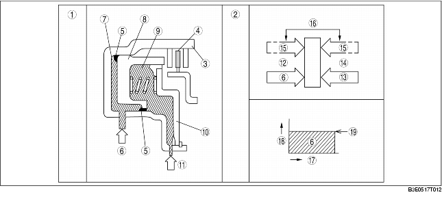

Centrifugal balance clutch operation
When clutch pressure is not applied
• When the clutch drum rotates, centrifugal force acts on the residual ATF in the clutch chamber to push against the piston. However, centrifugal force also acts on the ATF filling the centrifugal balance clutch chamber to push back the piston. As a result, the two forces are eliminated and the piston remains stationary, thus preventing clutch engagement.
When clutch pressure is applied
• When clutch pressure is applied to the clutch chamber, the clutch pressure overcomes the oil pressure and spring force in the opposite centrifugal balance clutch chamber, and pushes the piston to engage the clutches. Because the centrifugal force acting on the clutch pressure in the clutch chamber is canceled by another centrifugal force acting on the ATF filling the centrifugal balance clutch chamber, the influence of the centrifugal force created by the clutch drum revolution speed is eliminated. As a result, stable piston pushing force is obtained in all rotation ranges, and smoother shifts can be made.

.